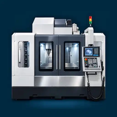

Registro turno Centri Di Lavoro
FR01 · FR03
Caricamento… Se questa scritta non cambia, il visualizzatore non esegue il programma. Apri il sito pubblicato nel browser.
Bozze separate per macchina su questo dispositivo.
Annotazioni visive
Aggiungi foto del turno dal telefono. Puoi scattarle ora oppure scegliere quelle già salvate.
Puoi annotare una foto con pennello e testo. Le immagini restano solo in questo browser: non vengono inviate a un server.
Salva e condividi il riepilogo
Conferma tu il destinatario e l’invio su WhatsApp. Stampa / PDF apre la stampa del browser, non scarica automaticamente un PDF. Su Safari puoi anche usare Condividi → Opzioni → PDF, se disponibile, e controlla l’anteprima.
Annota foto
Disegna con il dito per cerchiare o evidenziare. Scrivi il testo e premi “Aggiungi testo”.
Backup e limiti
Le bozze e le foto sono locali: nessuna sincronizzazione, autenticazione o archivio centrale. Cancellando i dati del browser puoi perderle. Salva le copie importanti. Non è garantita l’apertura offline.
Il codice non invia le compilazioni o le foto a un server. La condivisione scelta dall’utente passa dati alle altre applicazioni. Non caricare copie compilate o backup nel repository pubblico. Verifica l’invio nella chat: il ritorno dal menu di condivisione non dimostra la consegna.
Versione 5.3 — nessuna libreria esterna.